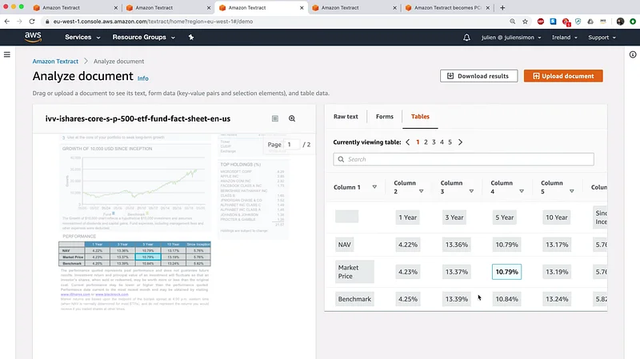

A quick look at Amazon Textract

Amazon Textract automatically extracts text and data from scanned documents, and goes beyond simple optical character recognition (OCR) to also identify the contents of fields and information in tables, without templates, configuration, or machine learning experience required.
Automatically extract text and structured data from documents with Amazon Textract | Amazon Web…
Documents are a primary tool for record keeping, communication, collaboration, and transactions across many industries…aws.amazon.com
Documents are a primary tool for record keeping, communication, collaboration, and transactions across many industries…aws.amazon.com
We just announced a new round of quality improvements (as well as PCI-DSS compliance). Of course, I had to test for myself :)
Happy to answer questions here or on Twitter.